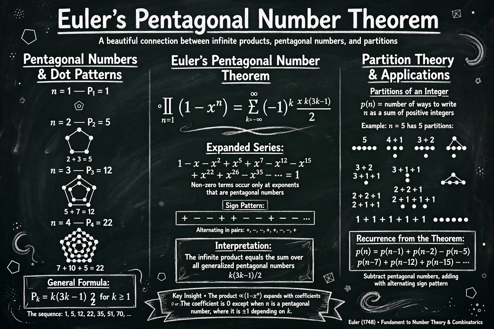

In mathematics, the pentagonal number theorem, originally due to Leonhard Euler, relates the product and series representations of the Euler function φ(q) to sums over the generalized pentagonal numbers.

∏n≥1(1 − xn) = Σk=−∞∞ (−1)k xk(3k−1)/2 = 1 − x − x² + x⁵ + x⁷ − x¹² − … The exponents 1, 2, 5, 7, 12, 15, … are the generalized pentagonal numbers.
The theorem yields Euler's recurrence for the partition function: p(n) = p(n−1) + p(n−2) − p(n−5) − p(n−7) + p(n−12) + …, with alternating signs in pairs, allowing efficient computation of p(n). A bijective proof using involutions on partition diagrams (Ferrers diagrams) was given by Fabian Franklin in 1881.